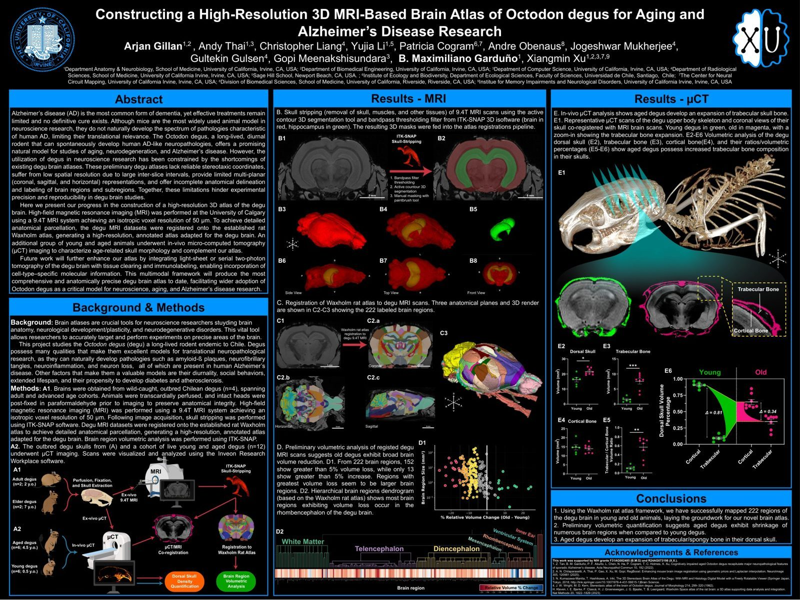
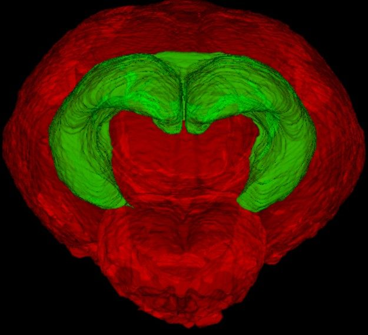
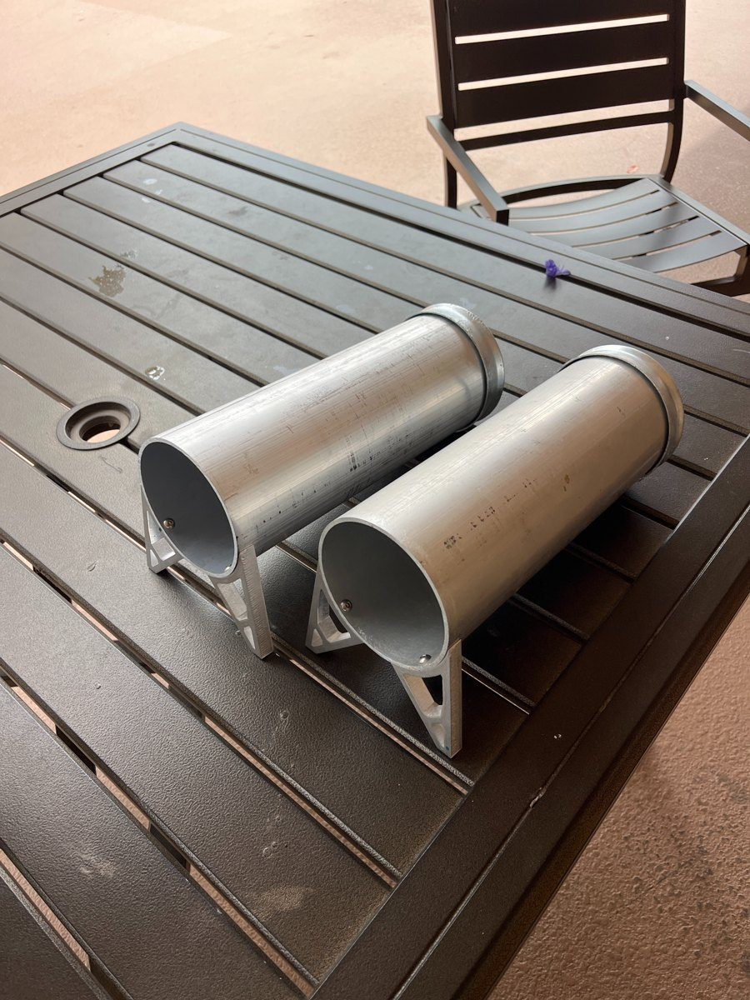
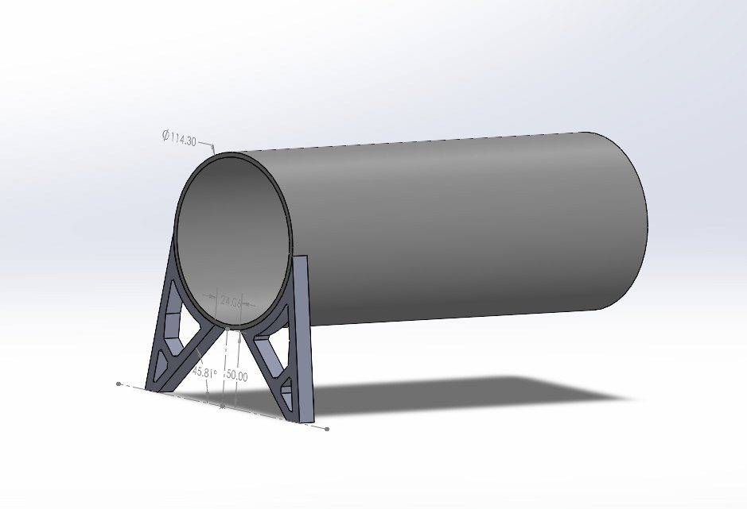
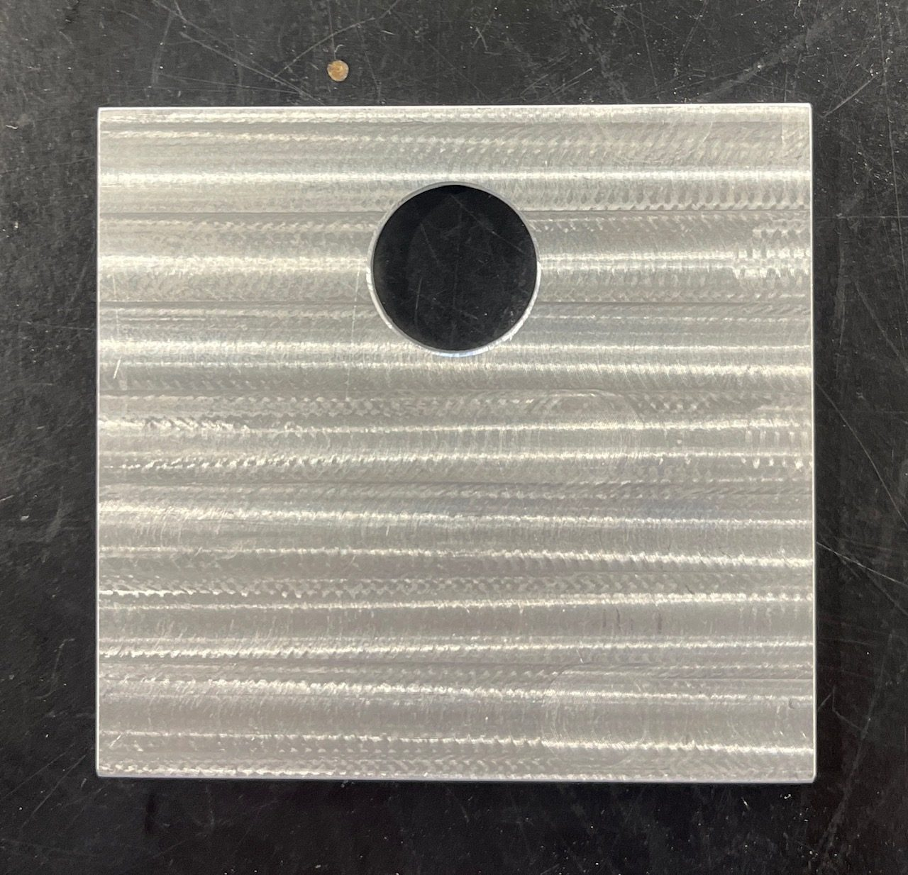

In the Xu Lab (Center for Neural Circuit Mapping) I'm first author on an NIH-funded degu brain-atlas project, and I've designed hardware for the lab's animal colony. The work spans neuroimaging analysis and hands-on mechanical design, turning raw MRI data, or a raw engineering need, into something rigorous and usable.

I'm first author on an NIH-funded project constructing a high-resolution 3D MRI-based brain atlas of Octodon degus, a long-lived rodent that naturally develops Alzheimer's-like pathology, making it a valuable model for aging and neurodegeneration research. Existing degu atlases are low-resolution and poorly labeled; ours aims to fix that.
- MRI skull-stripping & segmentation: processed 9.4T MRI scans (50 µm isotropic) in ITK-SNAP, using active-contour 3D segmentation and bandpass thresholding to isolate the brain (red) and hippocampus (green).
- Atlas registration: registered degu brains onto the established Waxholm rat atlas to parcellate and label 222 brain regions, generating a high-resolution annotated atlas.
- Volumetric analysis: quantified regional brain volumes, finding aged degus show broad shrinkage (152 of 222 regions with >5% volume loss) plus an expansion of trabecular skull bone via µCT.
Presented as a research poster (Gillan et al.), first author among a multi-institution team. Supported by NIH grants F31AG082485 and R24AG073198.


A hands-on hardware task for the lab's degu colony: I designed and built aluminum burrowing tubes end to end, from CAD to a fabricated, assembled part with a documented build plan.
- CAD design: modeled the tube and mounting feet in SolidWorks, sizing an aluminum tube (105 mm OD, 3 mm wall) on angled machined feet.
- Fabrication: sourced stock and ordered machined feet through SendCutSend; deburred, marked, and drilled M3 clearance holes to assemble the tube to its feet.
- Documentation: wrote a step-by-step build plan with dimensions, tolerances, and a bill of materials so the build is reproducible by the lab.



Note: this research is ongoing and partly unpublished, so this page describes methods and my role rather than unreleased results.